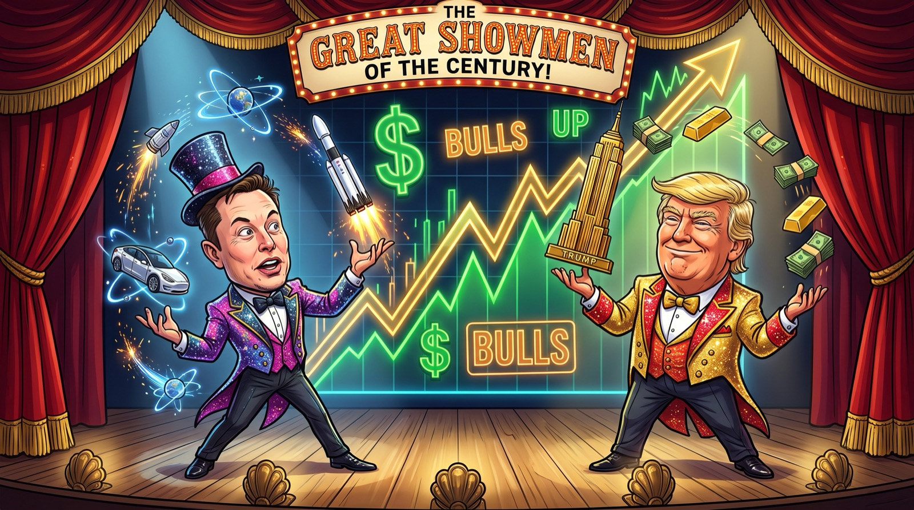
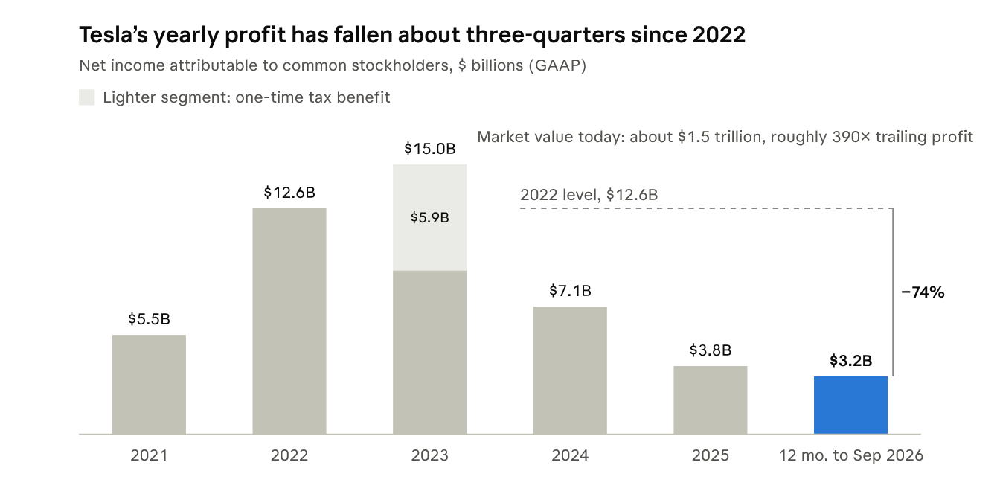

İş dünyasında ve siyasette Elon Musk ile Donald Trump kadar dikkat çeken, izleyenleri de bu kadar ikiye bölen pek az isim var. Son on yılda, hele ikisinin yörüngeleri Washington’da ve Wall Street’te kesişmeye başladıktan sonra, finans dünyasının kuşkucuları, açığa satışçılar ve medya yorumcuları arasında kışkırtıcı bir tez taraftar buldu: Elon Musk’ın şirketleri, özünde Silikon Vadisi’nin Donald Trump’ı mı?
Bu karşılaştırmanın merkezinde, bugünün piyasalarının anlatıyı temel verilerin önüne koymasına yönelik bir eleştiri yatıyor. Eleştirmenlere göre Musk’ın Tesla’dan SpaceX’e, xAI’dan X’e uzanan şirketler imparatorluğu, Trump’ın gayrimenkulde, medyada ve siyasette uyguladığı meşhur oyun planının aynısına yaslanıyor: durmaksızın kendini pazarlamak, nadiren zamanında gerçekleşen görkemli vaatler ve kârla, finansal sonuçlarla orantılı olmak yerine sadık bir hayran kitlesinin ayakta tuttuğu uçuk kâğıt üstü değerlemeler.
Yine de 2026’nın son aylarında bilançolara, fabrikalara ve fırlatma rampalarına yakından bakınca karşılaştırma iki şeyi birden gösteriyor: çarpıcı psikolojik benzerlikleri ve işin mutfağındaki derin farkları.

Benzetmenin Dayanakları: Şovmenlik, Kaçırılan Tarihler ve Değerleme Uçurumları
Eleştirmenler Manhattan’ın en ünlü emlak patronuyla Silikon Vadisi’nin en zengin girişimcisi arasında neden bağ kuruyor? Gözlemciler tekrar tekrar karşımıza çıkan üç örüntüye işaret ediyor.
1. Her Şeyin Başı Kişisel Marka
Medya eleştirmenleri ve iş tarihçileri, hem Trump’ın hem de Musk’ın kamusal imajlarını başlıca finansal varlıklarına dönüştürdüğünü uzun zamandır vurguluyor. Trump’ın iş kariyerinde “Trump” adı bir lisans motoru oldu. Lüksün ve başarının simgesi olan bu isim çoğu zaman altındaki gayrimenkulün nakit akışından daha ağır basıyordu. Aynı dinamik bugün, geliri mütevazı olmasına rağmen piyasa değeri milyarlarca doları bulan Trump Media & Technology Group’ta (DJT) yankılanıyor.
Tesla ve SpaceX de geleneksel sanayi ölçütleriyle değil, “Musk primi”yle fiyatlanıyor. SpaceX Haziran 2026’daki tarihî halka arzında 1,78 trilyon dolar değerlemeyle borsaya girdi, ardından 1,9 trilyon doları aştı. Üstüne bir de SpaceX ile Tesla arasında, 3,4 trilyon dolarlık bir dev doğurabilecek olası birleşme görüşmelerine dair haberler geliyor. Bu tablo karşısında aklı başında her gözlemci, yatırımcıların geleneksel indirgenmiş nakit akışı modellerini değil, Musk’ın kişisel mitolojisini satın aldığı sonucuna varacaktır.
2. Hep Ertelenen Tarihler
Eleştirmenlerin elindeki en güçlü koz, Musk’ın tutturamadığı tarihlerin uzun listesi. Finans yayınları ve Tesla kuşkucuları, on yılı aşkın bir döneme yayılan, yıllarca gecikmiş ya da büsbütün buharlaşmış iddialı tahminleri tek tek kayda geçirmiş durumda.
- Otonom sürüş: Musk 2010’ların ortasından beri, gözetim gerektirmeyen tam otonom Tesla’ların bir iki yıl uzakta olduğunu defalarca öngördü. Tesla 2026’da Austin gibi seçili pazarlarda Cybercab robotaksi hizmetini başlattı. Ama eleştirmenlerin hatırlattığı gibi ülke çapında tam yasal onay ve kıyıdan kıyıya otonom sürüş, yıllar önce yatırımcılara satılan takvimin hâlâ çok gerisinde.
- Rafa kalkan ya da ertelenen hayaller: Musk’ın muhalifleri sık sık şu örnekleri sayıyor: kapısına kilit vurulan Hyperloop fikri, Cybertruck’ta ve yeni nesil Roadster’da yıllara yayılan gecikmeler ve uzun zamandır vaat edilen 25.000 dolarlık kitlesel elektrikli otomobilin, insansı robotlara (Optimus) ve uzay tabanlı yapay zekâ veri merkezlerine yönelmek uğruna rafa kaldırılması.
Açığa satışçılara ve kuşkucu analistlere göre bu örüntü klasik bir tanıtım döngüsüne benziyor: Temel göstergeler ne zaman zayıflasa anlatıyı, dolayısıyla hisse fiyatını ileri taşımak için yeni ve daha da cüretkâr bir vizyon sahneye çıkıyor.
3. Uçuk Değerlemeler, Mütevazı Kârlar
Musk’ın şirketleri değerlemeleriyle orantılı kâr üretiyor mu? Tesla’nın piyasa değeri 1,5 trilyon dolar civarında geziniyor. Oysa yıllık GAAP net kârı 2023’teki 15 milyar dolardan 2025’te 3,8 milyar dolara geriledi; 2026’nın üçüncü çeyreğiyle biten son on iki ayda ise yaklaşık 3,2 milyar dolarda kaldı. Geleneksel değer yatırımcısının gözünde, BYD gibi rakiplerle kıyasıya bir küresel rekabetin ortasındaki bir otomobil üreticisi için kârının yüzlerce katını ve satışlarının 13 katını (fiyat/satış oranı) ödemek, hype’ın temel verileri ezip geçmesinin ders kitaplarına girecek bir örneği.
SpaceX’in halka arz öncesi belgeleri de benzer bir tablo çizdi. Şirkete yaklaşık 2 trilyon dolar değer biçilirken konsolide faaliyetleri 2025’te 2,6 milyar dolar faaliyet zararı verdi. Bu zararın asıl yükü, yapay zekâ ve sosyal medya iştiraklerinden (xAI ve X) gelen 6,4 milyar dolarlık faaliyet zararıydı. Devasa piyasa değerleriyle cılız ya da negatif konsolide kârlar arasındaki bu kopukluk, Trump’ın siyasetine ve şirketlerine yıllardır yöneltilen eleştirileri hatırlatıyor.
Benzetmenin Tutmadığı Yer: Donanım, Ölçek ve Nakit Makineleri
Şovmenlikteki ve değerleme çarpanlarındaki yüzeysel benzerliklere rağmen, Musk’ın şirketlerini Trump’ın imparatorluğuyla bir tutmanın temel bir ayrımı gözden kaçırdığı savunulabilir: marka lisanslamak ile ağır sanayide iş çıkarmak arasındaki fark.
1. Gerçek Gelir, Ezici Pazar Payı
Ağırlıklı olarak gayrimenkul kaldıracına, marka lisansına ya da niş medyaya dayanan girişimlerin aksine Musk’ın amiral gemisi şirketleri devasa gelirler üretiyor ve sermaye yoğun küresel sektörlere baskın pazar paylarıyla hükmediyor:
- Tesla’nın ölçeği: 2026 ortasında Tesla’nın son on iki aylık geliri 100 milyar doları aştı, şirket 10 milyonuncu aracını teslim etti. Otomobillerin ötesinde enerji depolama bölümü (Megapack) de önemli bir kâr ve büyüme kaynağı oldu; yapay zekâ veri merkezlerine güç sağlamak için kritik olan şebeke ölçekli bataryaları bu bölüm tedarik ediyor.
- SpaceX ve Starlink: SpaceX kâğıt üstünde kalmış bir proje olmak şöyle dursun, dünyada yörüngeye fırlatılan kütlenin ezici çoğunluğunu taşıyor ve NASA ile ABD savunma kurumları için vazgeçilmez bir yüklenici. Daha da önemlisi, Starlink uydu interneti bölümü yalnızca 2025’te 11,4 milyar dolar gelir ve 4,4 milyar dolar faaliyet kârı elde etti. Bu rakamlar, şirket Starship’e ve yapay zekâ hesaplama gücüne on milyarlarca dolar gömerken bile çekirdekteki altyapı işinin son derece kârlı bir nakit makinesi olduğunu kanıtlıyor.
2. Mühendisliği Kamçılayan “Elon Saati”
Destekçiler ve risk sermayedarları, Musk’ın kaçırdığı tarihlerin içi boş tanıtım palavralarından temelden farklı olduğunu savunuyor. Silikon Vadisi’nde “Elon Saati” yaygın olarak agresif bir yönetim aracı sayılıyor: mühendislik ekiplerini daha hızlı yenilik yapmaya zorlamak için imkânsız görünen takvimler koymak.
Taraftarları şunu hatırlatıyor: Falcon 9’un yeniden kullanılabilirliği, Model 3’ün üretim artışı ve Starlink’in küresel uydu takımyıldızı, Musk’ın ilk iyimser tweet’lerinin düşündürdüğünden geç geldi, ama geldi. Geldiklerinde de koca sektörleri altüst ettiler. Bu bakışa göre tarih konusunda abartılı söz vermek, ürünü teslim edememekle aynı şey değil.
3. Sermaye Tahsisi ve Teknolojik Hendekler
Musk’ın şirketleri her yıl fiziksel araştırmaya, yarı iletken üretimine, batarya rafinajına ve roket imalatına on milyarlarca dolar akıtıyor. Musk bugüne kadar lisans ücretleriyle nakit çekmek yerine kazancını yeniden yatırmayı ve yeni sermaye toplamayı seçti. Böylece dikey entegre üretime dayanan, rakiplerin kopyalamakta zorlandığı rekabet hendekleri kazdı.
2026’daki Kesişme: Siyaset Bilançoya Karışınca
İşin ironik yanı, Musk ile Trump arasında bir benzetme olarak başlayan şey zamanla somut bir iç içe geçişe dönüştü. Musk’ın Trump’la gözler önündeki siyasi ittifakı, yönetimin Hükümet Verimliliği Departmanı’ndaki (DOGE) rolü de dâhil, Silikon Vadisi’nin yıkıcı yenilikçiliğiyle Washington’ın partizanlığı arasındaki çizgiyi bulanıklaştırdı.
2025 ve 2026 boyunca gördüğümüz gibi bu siyasi yakınlık iki ucu keskin bir kılıç çıktı. Yatırımcılar önce otonom araçlar için elverişli düzenlemeler bekleyerek Tesla hisselerini yukarı taşıdı. Ardından gelen tüketici tepkisi ve siyasi kutuplaşma ise kilit Batı pazarlarında araç talebini aşağı çekti. Tüketiciye dönük bir teknoloji markasına siyasi üslup taşımanın gerçek finansal riskleri olduğu böylece görülmüş oldu.
Sonuç: Hype Yakıttır, Asıl Sınav İcraattır
Peki Elon Musk’ın şirketleri Silikon Vadisi’nin Donald Trump’ı mı?
Karşılaştırmayı iletişim tarzı ve piyasa psikolojisiyle sınırlarsanız benzerliği görmezden gelmek zor. İki adam da dikkat ekonomisinin ustası oldu, geleneksel kapı bekçilerini aşmak için sosyal medyayı silah gibi kullandı ve sürükleyici bir anlatının, alışılmış finansal yerçekimine ve gerçek sonuçlara meydan okuyan değerlemeleri ve toplumsal kabulü ayakta tutabileceğini kanıtladı.
Ama karşılaştırma, Musk’ın imparatorluğunun altı boş bir palavradan ibaret olduğunu ima ediyorsa, finansal ve fiziksel kanıtlar başka bir hikâye anlatıyor. Otomotivden ve enerjiden yılda 100 milyar doların üzerinde gelir elde etmek, dünyanın baskın yörünge fırlatma filosunu işletmek ve milyarlarca dolar kâr eden bir uydu ağını yönetmek, göz boyamanın çok ötesine geçen somut sanayi başarıları.
Sonuçta Musk’ın kariyeri, Wall Street’i izleyen herkesi hem büyüleyen hem çileden çıkaran gri bir alanda duruyor: Sermaye toplamak ve dikkatleri üzerine çekmek için Trump usulü abartıya başvuruyor, ama o sermayeyle yeryüzündeki ve yeryüzünün üstündeki en karmaşık donanımlardan bazılarını inşa ediyor. Trilyonlarca dolarlık değerlemelerinin bir gün kârlarla haklı çıkıp çıkmayacağı hâlâ açık, belki de tutması pek olası olmayan bir bahis; ama tarih, palavranın arkasındaki fabrikaları hesaptan düşmenin kaybettiren bir kumar olduğunu düşündürüyor.
Ek: Rakamlarla Musk
A. Vaatler
Musk’ın en büyük vaatleri ve Kasım 2026 itibarıyla kamuya açık kayıtlara göre akıbetleri.
A1. Sürücüsüz araçlar ve robotaksiler. Musk 2013’ten beri tarih vererek otonom sürüş tahminleri yapıyor. Wikipedia’nın sürekli güncellenen listesi bunlardan 31 tanesini sayıyor: Biri tam anlamıyla tuttu (Haziran 2025’te tek bir araç fabrikadan alıcısına kendi kendine gitti), üçü kısmen tuttu, 20’si tutmadı, geri kalanı hâlâ açık. Kilometre taşları:
| Tarih | İddia | Sonuç |
|---|---|---|
| Eylül 2013 | Üç yıl içinde “kat edilen yolun %90’ı” otonom | Tutmadı |
| Aralık 2015 | “Yaklaşık iki yıl içinde tam otonomi” | Tutmadı |
| Ekim 2016 | 2017 sonuna kadar Los Angeles–New York arasında “tek bir dokunuşa bile gerek kalmadan” yolculuk | Tutmadı; bireysel bir araç sahibi yolculuğu Ocak 2026’da FSD ile tamamladı |
| Nisan 2019 | 2020’de “yollarda bir milyonu aşkın robotaksi” | Tutmadı; sürücüsüz hizmet bugün çoğu Teksas ve Florida’da olmak üzere sekiz şehirde çalışıyor |
| Temmuz 2020 | “Seviye 5 otonominin temel işlevleri bu yıl tamamlanacak” | Tutmadı |
| Temmuz 2023 | “FSD’nin yalancı çobanı benim, ama bence bu yılın sonunda insandan daha iyi olacağız” | Tutmadı |
| Ocak 2025 | Haziranda Austin’de ücretli hizmet olarak gözetimsiz FSD | 22 Haziran’da, yolcu koltuğunda bir güvenlik görevlisiyle başladı; bireysel kullanıcı sürümü “en erken” 2026’nın dördüncü çeyreğine ertelendi |
| Temmuz 2025 | 2025 sonuna kadar ABD nüfusunun yarısına robotaksi | Tutmadı; hedef en büyük sekiz ila 10 metropol alanına daraltıldı |
| Ocak 2026 | 2026 sonuna kadar ABD’nin dörtte biri ile yarısı arasında sürücüsüz araçlar | Bekleniyor |
A2. Diğer ticari vaatler
A3. Siyasi vaatler: DOGE
| Vaat | Verildiği tarih | Bugünkü durum |
|---|---|---|
| Federal harcamaları “en az 2 trilyon dolar” kısmak | Ekim 2024 | Şubat 2025’te 1 trilyon dolara, ardından mali yıl için 150 milyar dolara indirildi. DOGE Kasım 2025’te fiilen dağıldı ve 4 Temmuz 2026’da resmen sona erdi; 215 milyar dolar tasarruf ettiğini iddia etti, ama uzmanlar bu rakama itiraz ediyor ve Beyaz Saray Bütçe Ofisi (OMB) nihai bir rapor hazırlamayı planlamıyor |
| Her tasarrufu herkese açık bir “makbuz duvarında” yayımlamak | Şubat 2025 | İlk açıklama 16 milyar dolar tasarruf iddia etti; 8 milyon dolarlık bir ICE sözleşmesinin 8 milyar dolar diye listelendiği anlaşılınca rakam 8,5 milyar dolara indi. NPR yalnızca yaklaşık 2 milyar doları doğrulayabildi. En büyük kalemlerden beşi, hatalar bildirildikten sonra listeden silindi |
B. 2021’den Bu Yana Tesla’nın Kârı

2023’teki tek seferlik vergi avantajını çıkarırsanız zirve 2022’ydi; son on iki ayda kazanılan para bunun ancak dörtte biri kadar.
C. Üç Değerleme Yan Yana
| Şirket | Piyasa değeri | Gelir | Net kâr | Fiyat/satış oranı | Fiyatın karşılığı |
|---|---|---|---|---|---|
| Tesla | ~1,5 trilyon dolar | 103,6 milyar dolar (12 ay) | ~3,2 milyar dolar (12 ay) | 14x | Robotaksiler, Optimus robotları |
| SpaceX | ~1,9 trilyon dolar | 14,6 milyar dolar (3. çeyrek) | 4,4 milyar dolar (3. çeyrek); –0,4 milyar dolar (9 ay) | 33x (3. çeyrek, yıllıklandırılmış) | Yapay zekâ hesaplama gücü, Starlink, Starship |
| Trump Media | ~1,1 milyar dolar | 4,5 milyon dolar (12 ay) | –1,3 milyar dolar (12 ay) | 245x | Trump markası, bitcoin, bir füzyon birleşmesi |
Tesla: 11 Kasım tarihli piyasa değeri ve Eylül 2026’ya kadarki 12 ayın sonuçları. SpaceX: 10 Kasım’daki 143,09 dolarlık kapanış, 13,58 milyar hisse ve üçüncü çeyrek sonuçları. Trump Media: son on iki ay; şirketin üçüncü çeyrek kârı kripto kazançlarından geldi.
Yorumlar